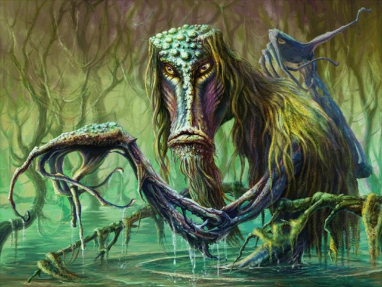
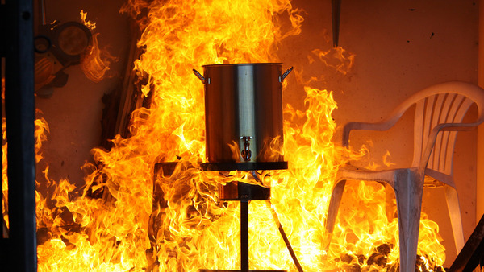
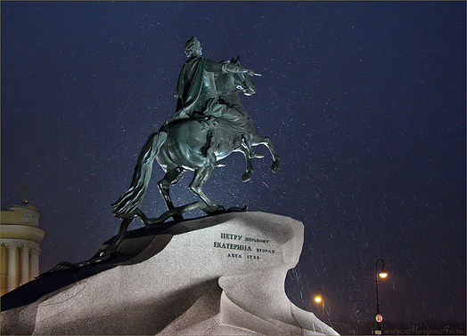
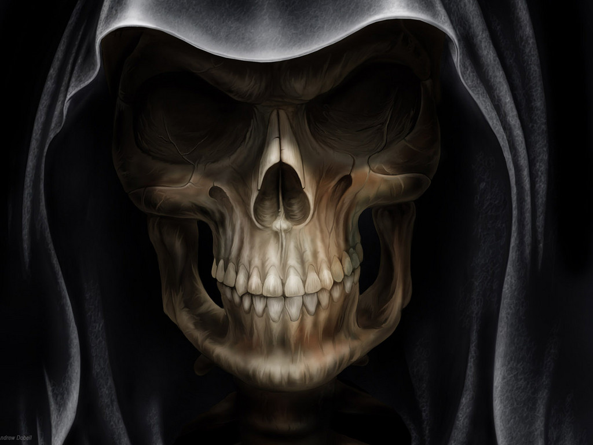
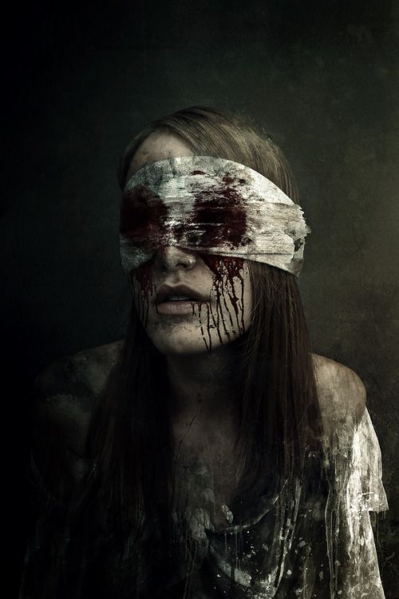

Věž Daliborka v komplexu Pražského hradu, kdysi součást pozdně gotického hradního opevnění, je co do mýtů a duchů jedním z neznámějších míst v Praze. Věž Daliborka sloužila až do konce 18. století jako vězení původně určené pouze pro vězně z řad šlechty, ale později bylo využíváno i pro neurozené občany. Věž dostala jméno po prvním vězni, Daliborovi z Kozojed. Dalibor, mladý a statečný rytíř, byl odsouzen k trestu smrti a zavřen v kobce věže za to, že ve svém domě poskytoval přístřeší nezbedným nevolníkům. Podle legendy se Dalibor během svého věznění v temné věži naučil hrát na housle. Líbivé zvuky houslí se linuly vzduchem a vzbuzovaly sympatie u obyvatel Prahy, kteří se shromažďovali pod věží, poslouchali, jak Dalibor hraje a na oplátku mu nosili jídlo a pití. Dalibor byl tak oblíbený, že datum jeho popravy nebylo nikdy vyhlášeno. Občané pak jen zaregistrovali, že sladký tón houslí nadobro ustal. Navštivte Pražský hrad navečer a nasajte atmosféru nahánějící husí kůži.
Pokud se za nocí osvícených měsícem budete procházet po Stromovce, dávejte si pozor na pojídače ryb! Tento nebezpečný duch pojídače ryb byl za svého života spolupracovníkem generála Windischgratze, který ostřeloval Prahu v roce 1848. Pojídač ryb byl za svého života tajemným mužem z aristokratické karpatské rodiny a říkalo se, že byl vzdálené spřízněný s hrabětem Drakulou. Tento záhadný muž se koupával v měsícem osvětlených rybnících Stromovky a často se říkalo, že byl kapitánem ryb z rybníka, protože byl trošku podivín a představoval si, že ryby jsou vojáci nižších hodností. Kapitán přišel o život v Praze poté, co ho mlynář Vondra ubil k smrti holí. Vondra hodil zmrzačené tělo do rybníka, kde v bahně tlelo dlouho potom, co rakouské vojsko opustilo město. Díky svým rodinným kořenům mohl být pojídač ryb dost dobře úžasným upírem, ale voda a bahno ho oslabili i v jeho posmrtném stavu. Je odsouzen k tomu, že se živí krví rozkládajících se ryb z kalných mělkých vod rybníků ve Stromovce. Ale nepodceňujte ho, protože nejvíce touží po lidské krvi! Nechte si od nás poradit a raději se rybníkům ve Stromovce v noci vyhýbejte!
Tlustý kupec
Pokud se budete pohybovat na Malé Straně a potkáte obrovského zakulaceného muže, nelekejte se, protože nejspíš půjde o přátelského ducha tlustého kupce. Když ještě žil, kupec byl nesmírně nenasytný a jedl a jedl, i když lidé kolem neměli co dát do úst. Jeho vzhled byl velmi nelichotivý, protože měl ten největší břich, jaký jste kdy v českých zemích mohli vidět, ale kupci to nevadilo. Miloval jen jídlo, ne zlato nebo cenné poklady, ale jídlo. Jednou večer se dovalil do své oblíbené Valdštejnské hospody (vedle současné budovy senátu na Malé Straně), frkal, láteřil a odfukoval a nenasytně toužil po spoustě jídla. Na jedno posezení snědl dvě pečené kachny a jednoho velkého krocana se spoustou knedlíků a spláchl to dvaceti pintami vína. Jeho žaludek burácel a mručel a tlusťoch byl konečně spokojený (dokud nenastal čas na další jídlo). V této chvíli připajdal do hospody hladovějící žebrák a žebral a prosil o kousek chleba, který tlustému kupci zbyl. Kupec se zasmál, žebrákovi vyhuboval a odmítl se s ním o chléb rozdělit. Žebrák pocítil vůči tlustému muži nenávist a přál si a modlil se, aby tlusťoch v hospodě explodoval. A přesně to se kupci stalo – prasknul, protože se nerozdělil o kousek chleba. Teď tlustý kupec straší na Malé Straně a lituje sebe a svou uvězněnou tlustou duši. Vysvobozen by mohl být kupec jen tehdy, kdyby ho politoval člověk bez domova. Bezdomovec by nad tlustým kupcem musel uronit slzu a nabídnout mu kousek chleba.
Vodník Karbourek
Vodník Karbourek je přátelský duch, který by se dal nejlépe popsat jako laskavá, mírumilovná a dobrosrdečná postava místního folklóru. Žije v potoce Čertovka a příležitostně jej můžete vidět, když z potoka vyleze a žebrá od kolemjdoucích, aby mu přinesli džbánek piva z některé z místních hospod. Dříve chodíval do hospod se zdejšími štamgasty. Hospodští mu vždy přinesli kbelík s vodou, do kterého si mohl ponořit nohy, aby se cítil jako doma. Později za nových časů mu hospodští kbelík už nenabízeli a vodník to vnímal jako velkou nezdvořilost. Začal nenávidět všechno nové a zůstával pod vodou obklopený starožitnostmi. Rozhodl se setrvat v potoce se svým majetkem (říkalo se, že jeho součástí je i obraz císaře) a jen čas od času, když má chuť na pivo, se vynoří na povrch. Ti, kteří mu pomohou uhasit žízeň, budou odměněni štikou nebo úhořem.

Duch francouzského majora
Historické opevnění Vyšehrad, kde se kněžna Libuše koupala se svými milenci předtím, než je svrhla ze skály, je místem, kde straší kdysi jeden z nejobávanějších a nejkrvelačnějších duchů v Praze, duch francouzského majora. Major byl velitelem francouzských vojsk, která vtrhla do Prahy v roce 1741 během války o rakouské dědictví, jenž byl zastřelen krátce před jejím vítězným koncem. Říká se, že padal k zemi, láteřil „sacrebleu“. Po své předčasné smrti začal major v podobě ducha útočit na stráže a vojáky. Některé zabíjel, jiným dal milost, ale ti byli po strašném zážitku v takovém šoku, že přestali mluvit. Až v roce 1892 došlo ke zmírnění majorovy hrůzovlády, když rakouský nadporučík Pištora majorovi zasalutoval, místo toho, aby se ho zalekl. Major se na nadporučíka zasmál, na oplátku mu také zasalutoval a šel si svou vlastní cestou. Od té doby je ve šťastném rozpoložení a na nikoho neútočí, jen kolemjdoucím zdvořile kyne.
Ohnivý krocan
Pokud se ocitnete uprostřed magické noci poblíž mlýna na romantické Kampě, možná, že zahlédnete ohnivého krocana. Ohnivý krocan je zajímavý duch, který se zjevuje jen jednou ročně o Velkém pátku. Dávejte si pozor, protože ohnivý krocan je opravdu ohnivý a horký na dotek! Pověst se má takto: Mlynář byl člověk, který si rád dopřával dobrého jídla a obzvlášť rád měl pečeného krocana. Krůtí maso bylo jeho oblíbené a o každém svátku si pochutnával na velikém krocanovi. Při jedné takové příležitosti se rozhodl vykrmit tři krocany, aby si mohl Velikonoce opravdu užít. Jakožto věřící se chystal mlynář o Velkém pátku postít, aby si mohl velikonočního krocana řádně vychutnat. Uprostřed půstu ho přepadl tak velký hlad, že spořádal celého pečeného krocana v ten samý okamžik, kdy byl Ježíš uložen do hrobu. Když krocana zhltnul, udělalo se mu špatně, postihl ho žlučníkový záchvat a okamžitě zemřel. Od smrti nenasytného mlynáře se ohnivý krocan zjevuje každý rok na Velký pátek, usazený na mlynářovi a hlasitě hudruje a provokuje lidi, aby se přiblížili. Myslete na to, že ohnivého krocana nelze zabít ani vyhnat z Kampy a pro případ, že byste tohoto zlého ptáka potkali, dbejte na to, abyste měli žáruvzdorný oděv.

Železný muž
Sochu Železného muže najdete v Praze na Starém Městě. Železný muž je skutečný pražský duch a jeden z mála na světě, kterému postavili sochu. Jméno Železného muže, o kterém je řeč, je Jáchym Berka, jehož duch čeká na osvobození z prokletí již více než 400 let. Jeho příběh zní asi nějak takto: Jáchym Berka byl zasnouben se svým děvčetem, když musel odejít bojovat do války. Po návratu se k němu donesly zlé řeči, že jeho snoubenka mu byla nevěrná, a tak se Berka bez vysvětlení oženil s jinou dívkou ze sousedství. Jeho bývalá snoubenka měla zlomené srdce a cítila se tak zavržená, že se utopila ve Vltavě. Její otec se cítil tak zahanben, že skočil z vysoké věže. Když se to dozvěděl Jáchym Berka, uvědomil si, čeho se dopustil a uškrtil svou opileckou ženu a na Velký pátek se oběsil ve sklepě. Od své smrti se neustále toulá Platnéřskou ulicí a čeká na vysvobození. Ale toho se nedočká tak snadno, prptože šanci má vždy jen jednou za sto let. Vysvobodit ho může jen panna, která s ním bude vést hodinu přátelský rozhovor, což zní sice jednoduše, ale tolik hodných dívek, které by si chtěli povídat s duchem vraha, není. Železný muž bohužel ztratil svou zatím poslední šanci na vysvobození v roce 2009 a musí tedy čekat dalších 100 let!

Žebrající kostlivec
Dejte si pozor na vysokého žebrajícího kostlivce! Jedním z nejvyšších a nejpřátelštějších duchů v Praze je enormně vysoký kostlivec, který straší po setmění v okolí Karolina. Není nebezpečný a nezajímají ho střízliví lidé, jen ti, kteří se posilnili alkoholem – od těch žebrá peníze. Jeho smutný příběh je ve zkratce následující: Za starých časů se Karolinum využívalo jako lékařská fakulta, na které pracoval velmi vysoký a elegantní mladý muž jménem Vincenc. Jeden stařičký profesor anatomie byl fascinován jeho tělem a řekl mu, že by představoval nádherný přírůstek do jeho sbírky koster. Protože byl chudý, mladý muž navrhl profesorovi, aby si jeho kostru koupil. Doktor bez výhrad souhlasil a slušně mu zaplatil. Mladý muž však použil peníze k hazardu a na pití a nakonec zemřel při rvačce s opilci v jednom z barů. Dnes chodí kostlivec v ulicích poblíž Karolina a žebrá o peníze od opilců, aby si mohl od profesora koupit ztracenou svobodu.

Šílený holič
Pokud se ocitnete v Karlově ulici v temných nočních hodinách, dávejte si pozor na šíleného holiče, přívětivého ducha, který hledá svobodu z nevolnické služby strašidelné věčnosti, kdy se toulá po ulicích pražského Starého Města. Tento duch žil za vlády Rudolfa II. a byl profesí úspěšný holič, který si užíval relativního blahobytu střední třídy. Jeho zaměstnání mu však nevydělávalo dostatek peněz, aby byl šťastný, a tak se šílený holič rozhodl zkusit své štěstí u kouzelné alchymie. Praktikoval doma staré rituály a začal vyrábět zlato. Jeho žena a tři dcery ho varovaly, že to nepovede k ničemu dobrému. Nakonec muže chamtivost zničila. Z peněz, které rodina měla, mu nic nezbylo. Byl nucen prodat dům, všechny tři dcery se začaly živit jako prostitutky a jeho manželka ukončila svůj smutný život skokem z vysokého opevnění. Holič se zbláznil z toho, že neměl ani na krajíc chleba, a začal řezat kolemjdoucí břitvou. Nakonec vyprovokoval skupinu vojáků, kteří ho ubili k smrti. Šílený holič není v žádném případě zlý duch, jen si přeje vysvobození. K tomu dojde tehdy, až odvážný jedinec svolí k tomu, že ho tento hrůzně vyhlížející průhledný muž s šíleným výrazem v očích a třesoucími se končetinami oholí. Jste dostatečně odvážní na to nechat se od šíleného holiče oholit? Město Praha a obyvatelé Karlovy ulice by vám jistě poděkovali!
Bezhlavá paní
Pokud se nedej bože octnete v noční hodinu, kdy mají pré čarodějnice, v okolí bývalého kláštera svaté Máří Magdalény, dávejte si pozor na bezhlavou paní. Bezhlavá paní byla kdysi krásná herečka Laura, která vystupovala v Nosticově divadle v Praze. Měla mnoho obdivovatelů, byla velmi krásná a okouzlující. Proto není divu, že na ni její manžel žárlil. Nakonec ji její krása a manželova žárlivost zabily. Zamilovala se do bohatého hraběte, který ji toužil odlákat od jejího manžela. Jednou v noci po vystoupení hraběti podlehla. Když se potom vrátila domů, její manžel pojal podezření, kde se toulala a začal ji vyslýchat. Nakonec se rozhodl vzít situaci do svých rukou a usekl jí hlavu. Jako zakončení tohoto hrůzného činu poslal hlavu své ženy hraběti, který ji ze strachu zakopal na neznámém místě. Bezhlavá dáma nyní tráví čas potulováním se po bývalém klášteře a hledá svou hlavu. Nahání sice hrůzu, ale není nebezpečná.
